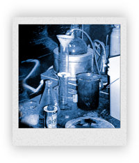

12.3 Read the booklet
Read: WHAT IS METH MADE FROM?

Methamphetamine is a synthetic (man-made) chemical, unlike cocaine, for instance, which comes from a plant.
Meth is commonly manufactured in illegal, hidden laboratories, mixing various forms of amphetamine (another
stimulant drug) or derivatives with other chemicals to boost its potency. Common pills for cold remedies are
often used as the basis for the production of the drug. The meth “cook” extracts ingredients from those pills
and to increase its strength combines the substance with chemicals such as battery acid, drain cleaner, lantern
fuel and antifreeze.
These dangerous chemicals are potentially explosive and because the meth cooks are drug users themselves and
disoriented, they are often severely burned and disfigured or killed when their preparations explode. Such
accidents endanger others in nearby homes or buildings.
The illegal laboratories create a lot of toxic waste as well—the production of one pound of methamphetamine
produces five pounds of waste. People exposed to this waste material can become poisoned and sick.
“Welfare money was not enough to pay for our meth habit and support our son so we turned our rented home into a
meth lab. We stored the toxic chemicals in our refrigerator not knowing that the toxins would permeate [go into]
the other food in the icebox.
“When I gave my three-year-old son some cheese to eat, I did not know that I was giving him poisoned food. I was too stoned on meth to notice, until twelve hours later, that my son was deathly ill. But then I was so stoned it took me two hours to figure out how to get him to the hospital five miles away. By the time I got to the emergency room my boy was pronounced dead of a lethal dose of ammonia hydroxide—one of the chemicals used to make meth.” —Melanie